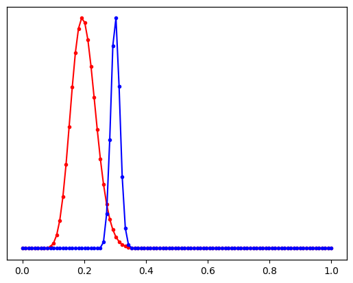

Bayesian Machine Learning
These notes are based on the first lecture on Bayesian ML by Andrew Gordon Wilson, NYU, 2023.
Notes
This lecture was mostly about motivating the need for Bayesian ML. What does it mean to think in a probabilistic way?
Here are some discussions:
Which model would you choose?
- \(y = a_0 + a_1 * t\)
- \(y = a_0 + a_1 * t + a_2 * t^2 + a_3 * t^3\)
- \(y = a_0 + a_1 * t + a_2 * t^2 + a_3 * t^3 + ... + a_{100} * t^{100}\)
Prof chooses iii. because it is a larger parameter space, and provides more options
Should data size be relevant to size of a model?
- Although overfitting is a problem, but it is known that overparametrized models like NNs don’t overfit
- Model complexity should depend on the problem and the formalism of our beliefs and inductive biases, not how many observations we have
The case for epistemic uncertainity modelling.
- More data should reduce uncertainity and improve prediction
- More data should not change the model
Bayesian Model Average
- It is about Marginilaztion vs. Optimization
- Instead of using one value for the weights, we use a distribution of weights
Following are three problems to illustrate probabilistic thinking:
01. Linear Regression
Suppose we have a dataset \(D = \{x_i, y_i\}_N\). What model do we fit to this, to do accurate predictions later?
Answer:
We can fit a simple M-degree polynomial model \(y = f_w(x) = \sum_{i=0}^M w_i x^i\). To obtain these parameters, we need to define an objective i.e. loss function to optimize.
A simple choice is the Squared Error loss i.e. \(L(w) = \sum_{i=1}^N (y_i - f_w(x_i))^2\). This involves solving for \(w^* = argmin_w L(w)\) which has a closed form solution \(w^* = (X^T X)^{-1} X^T y\).
One way to regularize this parameter space is to restrict large values of higher order polynomials usually their L2 norm _{i=1}^M \(\lambda w_i^2\) as an additional loss term. However, this is arbitrary. This contraints weights to be near 0, which is an inductive belief.
Bayesian Answer:
We can alternatively formulate this as a probabilistic model, where we assume that the data is generated from a linear model with Gaussian noise \(y = f_w(x) + \epsilon\), where \(\epsilon \sim \mathcal{N}(0, \sigma^2)\).
Then we can write the likelihood of fitting \(y\) with a given \(w\) as \(p(y | x, w, \sigma^2) = \mathcal{N}(y | f_w(x), \sigma^2)\). The likelihood of the data \(p(D|w)\) would be a product of the normals. Maximizing this likeihood is equivalent to minimizing the squared error loss. (Apply log transformation)
Suppose we want to say that the weights are normally distributed, i.e. \(w \sim \mathcal{N}(0, \Sigma)\). Then, we can write the posterior distribution of the weights as \(p(w | D, \sigma^2) \propto p(D | w, \sigma^2) p(w)\). Maximizing the posterior involves maximizing the \(log(p(w))\) == reducing \(w^T w\) to reduce variance of the gaussian prior.
Therefore, maximizing this posterior is equivalent to minimizing the regularized loss function \(L(w) + \lambda w^T w\). This gives bayesian interpretation to regularization.
02: Coin Tossing
Suppose we toss a coin \(N\) times and observe \(m\) tails. What is the probability that the next toss will be a tail?
Answer:
The probability of getting a tail is its bias \(\lambda\). The trivial answer would be \(\frac{m}{N}\). This is the frequentist estimation, which seems reasonable but inadequate for low m and N. If m = 1 and N = 1, shall we always predict tails?
Let us try another way that incorporates the data and our prior beliefs. To solve this in a probabilistic way and later bayesian way:
Bayesian Answer:
The probabilistic way is to explore for all ranges of possible values, and determine which parameter values are more likely. It is about estimating distribution of the parameter instead of only the best. The likelihood of the data given a parameter value is $p(D | \(\lambda\))$.
We ask what is the likelihood and what is the prior?
Let \(\lambda\) be the bias i.e. probability of getting a tail.
The likelihood \(p(D | \lambda) = \prod_{i=1}^N p(x_i | \lambda) = \binom{N}{m}\lambda^m (1 - \lambda)^{N-m}\) is a binomial distribution, because it is a product of Bernoulli distributions.
The naive way to go from here is the find \(\lambda\) that maximizes the likelihood. This is called the maximum likelihood estimate (MLE). We can differentiate this likelihood and set it to zero to find the maximum, which turns out to at \(\lambda = \frac{m}{N}\). But this point estimate, runs into the same frequentist problem for low data.
We now explore other possible values of \(\lambda\) and its likelihood. Suppose we have N = 10, m = 7:
import math
import numpy as np
import matplotlib.pyplot as plt
N = 10
m = 7
_bias = np.linspace(0, 1, 11)
_likelihood = math.comb(N, m) * _bias**m * (1 - _bias)**(N - m)
plt.plot(_bias, _likelihood, 'o--')
print(_likelihood[6] / _likelihood[7])0.8057284197667883Here we observe that bias = 0.7 has the most likelihood. And 0.6 is 80% as likely as 0.7. We are thinking of assigning every possible value of \(\lambda\) a probability. When we have more data, the likelihood will be more peaked around the true value.
import math
import numpy as np
import matplotlib.pyplot as plt
N = 100
m = 70
_bias = np.linspace(0, 1, 11)
_likelihood = math.comb(N, m) * _bias**m * (1 - _bias)**(N - m)
plt.plot(_bias, _likelihood, 'go--')
print(_likelihood[6] / _likelihood[7])0.11531527103794582
We now see that 0.6 is now 11% as likely as 0.7. We are more less confident about this choice now compared to our best choice.
How can we introduce some prior belief, say yesterday we have tossed 1000 coins and observed 301 tails? We should be really sure that the bias is 0.3 instead of the now 0.7. Using the bayesian philosophy, we modify the likelihood to include the prior belief.
\[posterior \propto likelihood * prior\] \[p(\lambda | D) \propto p(D | \lambda) p(\lambda)\]
To make life easy, we can choose the prior to resemble the likelihood (Binomial). The Beta distribution \(p(\lambda) = \text{Beta}(\lambda | a, b) = \frac{\lambda^{a-1} (1 - \lambda)^{b-1}}{B(a, b)}\), where \(B(a, b)\) is the beta function, a is no. of tails and b is no. of heads. Only note the shape of the beta distribution as we are ignoring the constant term.
import numpy as np
import matplotlib.pyplot as plt
x = np.linspace(0, 1, 100)
a1, b1 = 20, 80
a2, b2 = 301, 699
y1 = (x**(a1-1)) * ((1-x)**(b1-1))
y2 = (x**(a2-1)) * ((1-x)**(b2-1))
fig, ax1 = plt.subplots()
ax1.plot(x, y1, 'r.-', label='a=30, b=70')
ax2 = ax1.twinx()
ax2.plot(x, y2, 'b.-', label='a=201, b=799')
ax1.legend(loc='upper left')
ax2.legend(loc='upper right')
plt.show()
The posterior is now \(p(\lambda | D) \propto \lambda^m (1 - \lambda)^{N-m} \lambda^{a-1} (1 - \lambda)^{b-1} = \lambda^{m+a-1} (1 - \lambda)^{N-m+b-1}\). This is a Beta distribution with parameters \(Beta(m+a, N-m+b)\). Since the posterior and prior both are Beta distributions, it is easy to visualize how the prior changes. Through the moments we can see that the frequentist estimate arises out of N going to infinity, with low variance/uncertainity.
\[\mathbb{E}[\lambda] = \frac{m + a}{N + a + b}\] \[\mathbb{V}[\lambda] = \frac{(m + a)(N - m + b)}{(N + a + b)^2 (N + a + b + 1)}\] \[\lim_{N \to \infty} \mathbb{E}[\lambda] = \frac{m}{N}\] \[\lim_{N \to \infty} \mathbb{V}[\lambda] = 0\]
Applying these priors to the likelihood for observations (N = 10, m=7) we notice how the posterior changes, and how the blue prior is stronger than the red prior. The red posterior is significantly different from the red prior. The red posterior has shifted towards the mean of the observations (likelihood). The blue posterior is not that affected from the observations because of a stronger prior.
import numpy as np
import matplotlib.pyplot as plt
_bias = np.linspace(0, 1, 101)
# observations
N = 10
m = 7
# priors
_a1, _b1 = 10, 40
_a2, _b2 = 301, 699
_prior1 = (_bias**(_a1-1)) * ((1-_bias)**(_b1-1))
_prior2 = (_bias**(_a2-1)) * ((1-_bias)**(_b2-1))
# posteriors
_post1 = (_bias**(m+_a1-1)) * ((1-_bias)**(N-m+_b1-1))
_post2 = (_bias**(m+_a2-1)) * ((1-_bias)**(N-m+_b2-1))
fig, ax1 = plt.subplots(figsize=(10, 6))
ax1.plot(_bias, _prior1, 'r.--', label='Prior a=10, b=40 (Set 1)')
ax1.set_xlabel('Bias')
ax1.set_yticks([]) # Remove y-axis ticks
ax2 = ax1.twinx()
ax2.plot(_bias, _prior2, 'b.-', label='Prior a=301, b=699 (Set 2)')
ax2.set_yticks([]) # Remove y-axis ticks
ax3 = ax1.twinx()
ax3.plot(_bias, _post1, 'r.-', label='Posterior a=10, b=40 (Set 1)')
ax3.set_yticks([]) # Remove y-axis ticks
ax4 = ax1.twinx()
ax4.plot(_bias, _post2, 'b.-', label='Posterior a=301, b=699 (Set 2)')
ax4.set_yticks([]) # Remove y-axis ticks
plt.show()Since this distribution is known analytically, it is easy to compute the posterior at any point. However, if the prior is modelled differently then it would be difficult to analytically compute the posterior. We must enumerate through all the values of the prior to calculate the denominator.
03. Urn Problem
There are 11 urns with 10 balls each. The i-th urn has i black balls. At every turn, we pick an urn at random and draw a ball with replacement. Suppose we observe m black balls after N turns. We can now ask: 1. What is the probability that the next ball is black? 2. What is the probability that the next ball is from the i-th urn?
Answer:
The trivial way to answer these questions partly would be: 1. Probability of the next ball being black is \(\frac{m}{N}\). 2. Let us say m = 3 and N = 10. Then we can say that its most likely we are picking from the 4th urn, because 4th urn has p(m) = 3 / 10. But can’t trivially assign a probability to this 4th urn.
But we can see that this is not a very good or complete answer. To obtain the probabilities for each urn, we need a Bayesian approach.
Bayesian Answer:
We need to find the posterior \(p(u | D)\), where u is the urn number \(u \in \{0..11\}\). D is the dataset, and since order doesn’t matter, D is just two integers m and N.
Lets start by modelling the likelihood \(p(m, N| u)\). We can again model this as a binomial distribution, i.e. product of N Bernoulli distributions with \(p = \frac{u}{10}\). Hence, we have \(p(m| u, N) = \binom{N}{m} (\frac{u}{10})^m (1 - \frac{u}{10})^{N-m}\).
Using Bayes’ rule, we have \(p(u | m, N) = \frac{p(m | u, N) p(u)}{p(m | N)}\), where \(p(m | N) = \sum_{u=0}^{10} p(m | u, N) p(u)\) is the marginal likelihood.
Suppose m = 3 and N = 10, we have